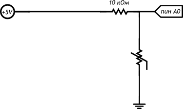

Метеостанция
@maker123В этом проекте мы передадим данные об измерениях температуры на компьютер (например, для последующей обработки).
Список деталей
- Плата Arduino Uno
- Макетная плата
- Резистор номиналоом 10 кОм
- Термистор
Принципиальная схема
Схама на макетке
#include "math.h"
int minute = 1;
// Параметр конкретного типа термистора (из datasheet):
#define TERMIST_B 4300
#define VIN 5.0
void setup()
{
// мы хотим передавать информацию на компьютер через USB, а
// точнее через последовательный (англ. serial) порт.
// Для этого необходимо начать (англ. begin) передачу, указав
// скорость. 9600 бит в секунду — традиционная скорость.
// Функция «begin» не является глобальной, она принадлежит
// объекту с именем «Serial». Объекты — это «продвинутые»
// переменные, которые обладают собственными функциями,
// к которым обращаются через символ точки.
Serial.begin(9600);
// передаём заголовок нашей таблицы в текстовом виде, иначе
// говоря печатаем строку (англ. print line). Символы «\t» —
// это специальная последовательность, которая заменяется на
// знак табуляции (англ. tab): 8-кратный выровненный пробел
Serial.println("Minute\tTemperature");
}
void loop()
{
// вычисляем температуру в °С с помощью магической формулы.
// Используем при этом не целые числа, а вещественные. Их ещё
// называют числами с плавающей (англ. float) точкой. В
// выражениях с вещественными числами обязательно нужно явно
// указывать дробную часть у всех констант. Иначе дробная
// часть результата будет отброшена
float voltage = analogRead(A0) * VIN / 1024.0;
float r1 = voltage / (VIN - voltage);
float temperature = 1./( 1./(TERMIST_B)*log(r1)+1./(25. + 273.) ) - 273;
// печатаем текущую минуту и температуру, разделяя их табом.
// println переводит курсор на новую строку, а print — нет
Serial.print(minute);
Serial.print("\t");
Serial.println(temperature);
delay(60000); // засыпаем на минуту
++minute; // увеличиваем значение минуты на 1
// откройте окно Serial Monitor в среде Arduino, оставьте на
// сутки, скопируйте данные в Excel, чтобы построить графики
}